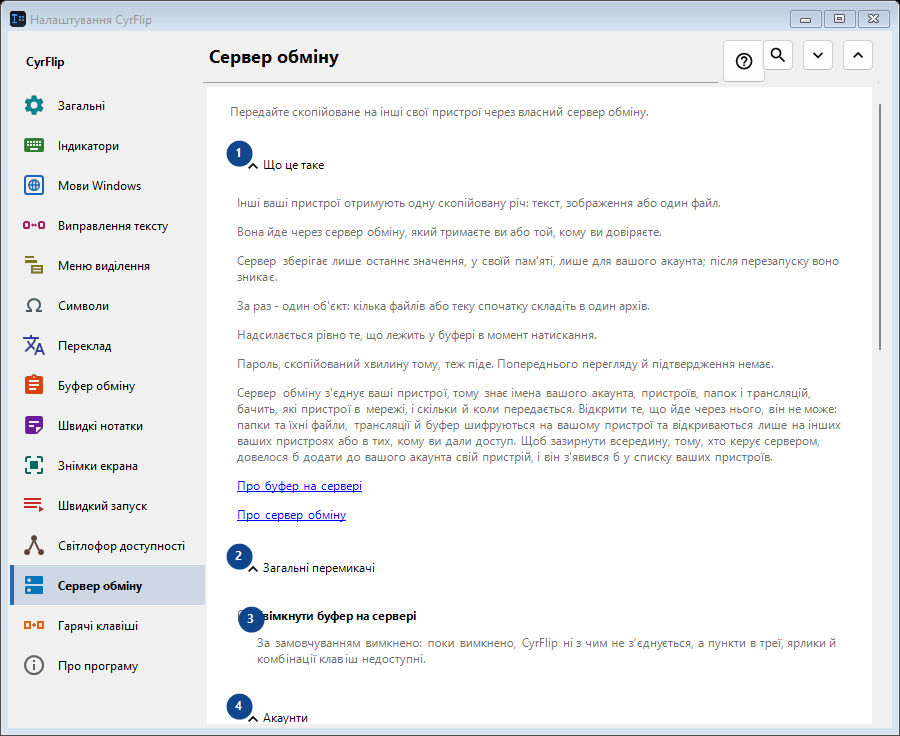
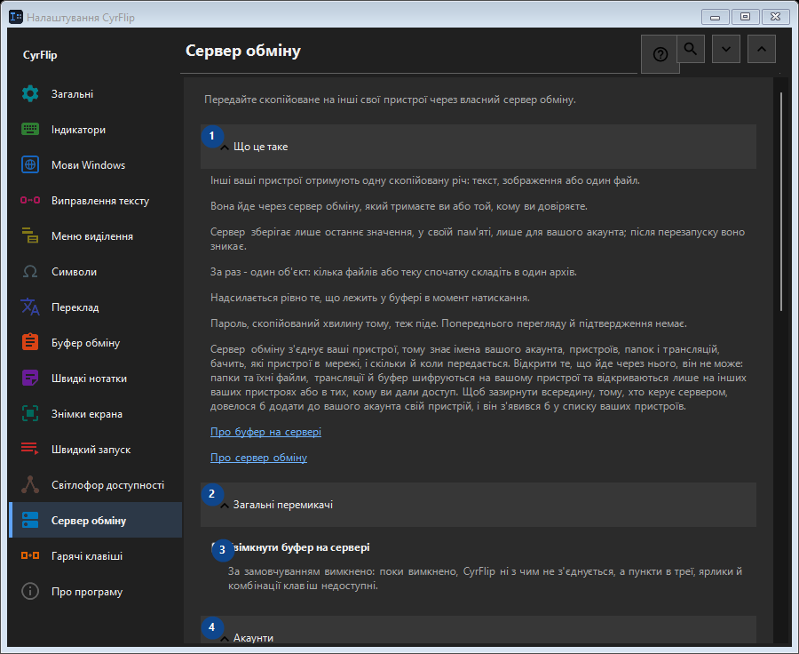

Сервер обміну
Для чого це вікно
Передайте скопійоване на інші свої пристрої через власний сервер обміну.


Порядок дій
Налаштування застосовуються одразу. Обов’язкового порядку немає; користуйтеся групами нижче.
Елементи
1. Що це таке
Скористайтеся командою, коли потрібна вказана дія. Прочитайте запит підтвердження перед згодою.
Ваші сполучення клавіш2. Загальні перемикачі
Скористайтеся командою, коли потрібна вказана дія. Прочитайте запит підтвердження перед згодою.
Ваші сполучення клавіш3. Увімкнути буфер на сервері
За замовчуванням вимкнено: поки вимкнено, CyrFlip ні з чим не з'єднується, а пункти в треї, ярлики й комбінації клавіш недоступні.
Ваші сполучення клавіш4. Акаунти
Скористайтеся командою, коли потрібна вказана дія. Прочитайте запит підтвердження перед згодою.
Ваші сполучення клавіш5. Додати акаунт..
Недоступно, поки вимкнено перемикач «Увімкнути буфер на сервері» - спершу ввімкніть його. Елемент зараз недоступний. Спочатку ввімкніть функцію або виберіть запис.
Ваші сполучення клавіш6. Комбінації клавіш і ярлики
Скористайтеся командою, коли потрібна вказана дія. Прочитайте запит підтвердження перед згодою.
Ваші сполучення клавіш7. Надіслати буфер на сервер
Недоступно, поки вимкнено перемикач «Увімкнути буфер на сервері» - спершу ввімкніть його. Елемент зараз недоступний. Спочатку ввімкніть функцію або виберіть запис.
Ваші сполучення клавіш8. Змінити - Надіслати буфер на сервер
Недоступно, поки вимкнено перемикач «Увімкнути буфер на сервері» - спершу ввімкніть його. Елемент зараз недоступний. Спочатку ввімкніть функцію або виберіть запис.
Ваші сполучення клавіш9. Отримати буфер із сервера
Недоступно, поки вимкнено перемикач «Увімкнути буфер на сервері» - спершу ввімкніть його. Елемент зараз недоступний. Спочатку ввімкніть функцію або виберіть запис.
Ваші сполучення клавіш10. Змінити - Отримати буфер із сервера
Недоступно, поки вимкнено перемикач «Увімкнути буфер на сервері» - спершу ввімкніть його. Елемент зараз недоступний. Спочатку ввімкніть функцію або виберіть запис.
Ваші сполучення клавіш11. Покласти «Надіслати» на робочий стіл
Недоступно, поки вимкнено перемикач «Увімкнути буфер на сервері» - спершу ввімкніть його. Елемент зараз недоступний. Спочатку ввімкніть функцію або виберіть запис.
Ваші сполучення клавіш12. Покласти «Отримати» на робочий стіл
Недоступно, поки вимкнено перемикач «Увімкнути буфер на сервері» - спершу ввімкніть його. Елемент зараз недоступний. Спочатку ввімкніть функцію або виберіть запис.
Ваші сполучення клавіш13. Отримані файли
Скористайтеся командою, коли потрібна вказана дія. Прочитайте запит підтвердження перед згодою.
Ваші сполучення клавіш14. Тека для файлів, отриманих із сервера
Недоступно, поки вимкнено перемикач «Увімкнути буфер на сервері» - спершу ввімкніть його. Елемент зараз недоступний. Спочатку ввімкніть функцію або виберіть запис.
Ваші сполучення клавіш15. Обрати - Тека для файлів, отриманих із сервера
Недоступно, поки вимкнено перемикач «Увімкнути буфер на сервері» - спершу ввімкніть його. Елемент зараз недоступний. Спочатку ввімкніть функцію або виберіть запис.
Ваші сполучення клавіш16. Відкрити папку - Тека для файлів, отриманих із сервера
Недоступно, поки вимкнено перемикач «Увімкнути буфер на сервері» - спершу ввімкніть його. Елемент зараз недоступний. Спочатку ввімкніть функцію або виберіть запис.
Ваші сполучення клавіш